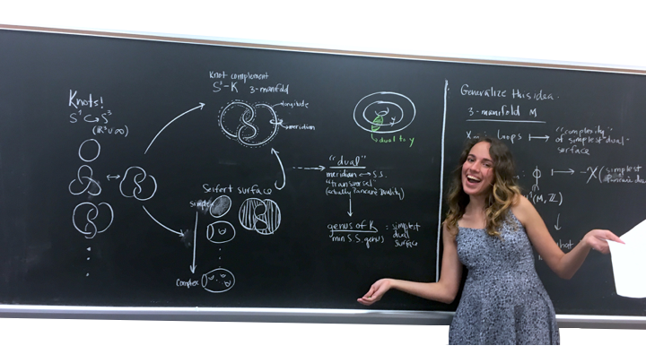

HOME
PAPERS & NOTES
SOFTWARE
ART
CV
& MORE
While I find the time to make a proper portfolio, check out my
instagram art account.
Ok y'all Imma try to make a carrousel. Here goes nothing.
Carousel Example

Previous
Next